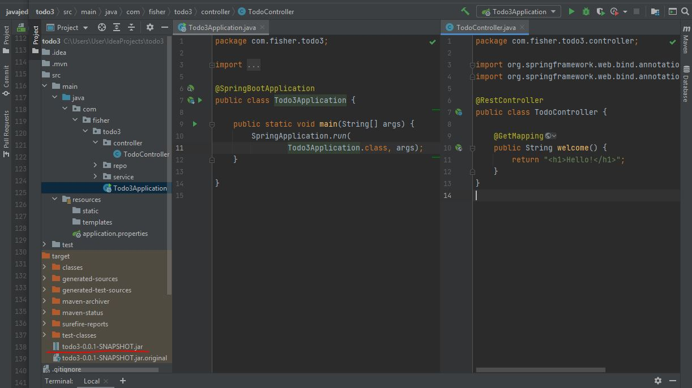

Что такое Docker
Docker - инструмент, предназначенный для быстрой доставки и развёртывания приложений. Он позволяет упаковать приложение вместе со всеми его зависимостями в так называемый контейнер, а затем запустить его в любой среде.
Идея контейнеризации состоит в том, что на одной машине может разворачиваться множество таких контейнеров с приложениями. Для каждого из них в операционной системе выделяется изолированная область — осуществляется виртуализация на уровне ОС.
Преимущества контейнеров:
- не нужно мучаться с настройкой окружение и подгрузкой зависимостей - все в контейнере
- приложения получают единый механизм сборки
- не нужно конфигурировать среду для запуска — она поставляется вместе с приложением
- приложения легче масштабировать
- есть система оркестрации контейнеров, позволяющая ими управлять
Основные понятия
Image (Образ) — некий шаблон, на основе которого создаются контейнеры. Содержит всё необходимое для запуска приложения. Сюда относятся код, системные утилиты, библиотеки, настройки и так далее. Образ можно представить в виде набора слоёв, которые накладываются друг на друга. Каждый последующий добавляет, изменяет или удаляет файлы предыдущего слоя.
DockerfIle — текстовый файл с набором инструкций по созданию образа.
Container — конкретный экземпляр приложения, созданный на основе образа. Причём из одного образа можно создать сколько угодно контейнеров. Технически контейнер создаётся путём добавления к образу нового слоя, содержащего результаты работы приложения.
DockerHub — хранилище образов (как GitHub для кода приложений). Образы можно скачивать из реестра и создавать на их основе контейнеры. Также в реестр можно загружать новые или изменённые образы для дальнейшего использования.
Команды Docker
Работа с контенерами:
- docker ps – список всех запущенных контейнеров
- docker ps -a – список всех контейнеров
- docker run id или имя контейнера – запуск контейнера
- docker stop id или имя контейнера – остановка контейнера
- docker rm id или имя контейнера – удаляет контейнер
Работа с образами:
- docker images – список docker образов на хосте
- docker rmi id или имя образа – удаляет образ
- docker pull имя образа:tag – скачивает определенную версию образа с DockerHub
- docker build -t hello-app . – собирает докер образ с именем hello-app по докер-файлу находящемуся в текущей рабочей директории
Пишем DockerFile
FROM ubuntu:3.6
FROM – должна быть первой инструкцией в докер-файле. FROM указывает какой базовый (родительский) образ необходимо использовать для создания нашего образа. Через двоеточие указывается версия, по умолчанию будет взята последняя.
MAINTAINER Mr. Fisher
MAINTAINER – инструкция для указания автора.
LABEL version=”1.0”
LABEL – указывает любую информацию в формате ключ=значение.
Далее начинаем работать с нашим приложением. Например, у нас есть приложение на питоне. Чтобы с ним работать, нужно установиться сначала сам питон.
RUN apt-get update && \
apt-get install -y python3
RUN – инструкция для запуска каких то команд из терминала, при этом поверх текущего слоя создается новый, с результатами выполнения команды. В это инструкции можно писать сразу несколько команд через &&. У нас тут две команды apt-get update -обновляет списки пакетов доступных для установки и apt-get install -y python устанавливает питон.
Всё необходимое для работы нашего приложения мы установили теперь необходимо добавить в образ само наше приложение.
COPY hello.py /home/hello.py
COPY – осуществляет добавление файлов и папок в наш образ. Сначала указываем что копировать а потом в какое место в нашем образе.
ADD http://localhost/hello.pru /home/hello.py
ADD hello.tar.gz /home
ADD – тоже самое что и COPY, только в качестве первого аргумента можно указать ссылку на ресурс или указать какой то архив и он автоматически распакуется (хотя чаще всего нужно иметь именно запакованный вариант).
ENV PERSON_NAME=”John Smith”
ENV – задает переменные окружения
WORKDIR /home
WORKDIR – устанавливает рабочую директорию для всех последующих команд.
Последний шаг, нам нужно указать докеру что будет запускаться внутри контейнера. Для этого есть две инструкции ENTRYPOINT и CMD. (хз чем отличаются, но я рекомендуется использование ENTRYPOINT)
ENTRYPOINT [“/usr/bin/python3”]
CMD [“./hello.py”]
DockerFile готов. Осталось собрать сам образ и запустить. Сборка осуществляется командой docker build и в аргументах указываем название создаваемого образа hello-app и место, где хранится DockerFile, собственно по его инструкции и будет собираться докер образ. Если DockerFile находится в рабочей директории – указываем просто точку.
docker build -t hello-app .
Пример использования
- Скачиваем и устанавливаем Docker. (Часто нужно включить в BIOS аппаратную виртуализацию.)
- Создаём java-проект, например Spring Boot Web приложение. Проверяем что оно у нас успешно запускается на http://localhost:8080/
- Собираем проект в .jar-архив командой
mvn package

- Создаём файл с именем Dockerfile в корне проекта, который содержит инструкции для сборки образа со следующим текстом:
- После этого в терминале вводим команду, с помощью которой собираем образ и запускаем контейнер.
- Проверяем, что образ создан с помоью команды
docker imagesВывод должен быть таким: - Далее на основании этого образа запускаем контейнер, командой
- Теперь проверяем работоспособность запущенного контейнера, перейдя в браузере
по http://localhost:8080 или введя в терминале
curl http://localhost:8080

| Команда | Описание |
FROM adoptopenjdk/openjdk11:alpine-jre |
Oбраз создаётся на основе alpine linux с установленной openjdk11 |
ARG JAR_FILE=target/todo3-0.0.1-SNAPSHOT.jar |
Переменной JAR_FILE присваивается путь к jar- архиву |
WORKDIR /opt/app |
Назначаем рабочую директорию, в которой будут выполняться дальнейшие команды (перемещаемся в папку app) |
COPY ${JAR_FILE} app.jar |
Наш jar-файл, указанный в JAR_FILE, копируется в папку app, и копии задаётся имя app.jar |
ENTRYPOINT ["java","-jar","app.jar"] |
jar-файл запускается, собирается команда java -jar app.jar из заданной рабочей директории |
docker build -t todo3-0.0.1 .
Точка в конце важна, она указывает на расположение Dockerfile (символ «точка» означает текущую директорию.

docker run -d -p 8080:8080 -t todo3-0.0.1
Опция -d означает старт процесса в фоновом режиме.
Опция -p тоже важна — дело в том, что контейнер собирается в полностью изолированном окружении.
Тот факт, что приложение внутри контейнера запущено на порту 8080, не означает,
что оно доступно вне контейнера на этом порту.
Требуется явно указать, что порту 8080 в контейнере (здесь второе значение — это порт, на котором работает наше приложение в контейнере) соответствует порт 8080 на локальной машине, который будет использоваться при обращении к контейнеру. Поэтому пишем через двоеточие -p 8080:8080.